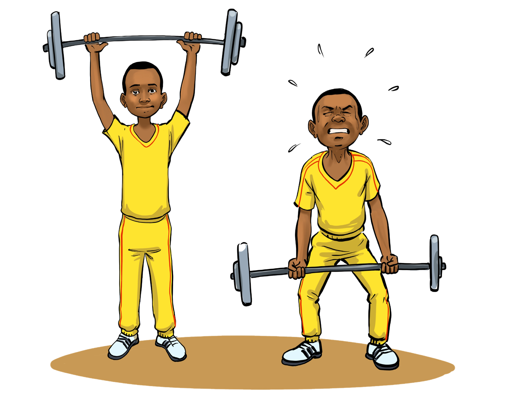

English for Secondary Schools Student’s Book Form One, printed page 78
| since | Indicates time (from a particular time until the present) |
1. I have been living here since last year. 2. 3. |
|---|---|---|
| with | Indicates relationship |
1. Mix the milk with sugar. 2. 3. |
(g) Recite the following panegyric and answer the questions that follow.
Hello! They say I’m sometimes strong and sometimes weak. I can tell whether something or someone is good, bad, happy, sad, ugly or beautiful. The noun thanks me all the time because I add more information to it. A noun is never angry when I’m around. They call me ADJECTIVE.

Two boys in yellow sportswear lift barbells, one raising his easily overhead while the other struggles with a pained expression, showing strong and weak.